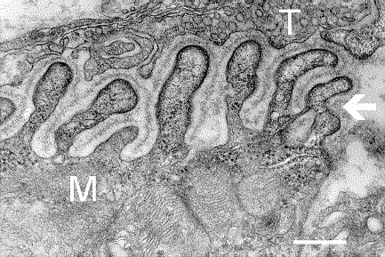

PÁGINA 5 · MECANISMO DA PLACA
Canal de cálcio: a força que sobe no começo
Se o canal de cálcio da placa está atacado, por que forçar o músculo aumenta a força no início do esforço? A pergunta organiza a facilitação do LEMS.
Esquema da sinapse normal × LEMS (hotspots VGCC/ACh/vesículas) com cenas de repouso e facilitação.
Como ler a sinapse
O painel A é a sinapse normal (canal Ca²⁺ + vesículas + AChR íntegros). O painel B é o LEMS: à esquerda o canal bloqueado por anticorpo anti-VGCC; à direita o canal remanescente que acumula Ca²⁺ com o uso. A cena 3 (facilitação) mostra o surto transitório de ACh e o ganho de força.
Curvas de força × uso repetido: facilitação no LEMS versus queda progressiva na MG.
O que as curvas mostram
Em verde (LEMS), a força parte baixa no repouso, sobe até o pico em ~4s e depois cede — o marcador é o gás inicial. Em vermelho (MG), cai continuamente desde o início. A seta-dourada em 10s marca o teste clínico: ali a discriminção entre as duas doenças é mais visível.

NIMH/NIH (Synapse Web) · domínio público (obra federal dos EUA) · Commons
.jpg){kind=link}
Onde mora a placa que o LEMS ataca
O terminal T (parte superior) é o pré-sináptico — é ali que vivem os canais de Ca²⁺ VGCC P/Q que o LEMS ataca. A seta marca as pregas juncionais com a lâmina basal (fenda). O vilão do LEMS não mora no músculo (M); quem mora no músculo é a MG (anti-AChR).
O que é LEMS neste recorte
A síndrome de Lambert-Eaton (LEMS) é doença da placa motora dirigida especificamente contra o canal de cálcio da placa — doença autoimune contra esse canal.
Esquema da sinapse que importa aqui
Axônio do 2º neurônio motor chega ao músculo. Na superfície da membrana do terminal, os canais de cálcio promovem a liberação de acetilcolina (ACh). Sem Ca entrando direito, a vesícula não descarrega ACh como deveria.
O ataque
No LEMS, o ataque aos canais de cálcio impede a liberação adequada de ACh. ACh cai → fraqueza.
Facilitação — o núcleo
Quanto mais o paciente utiliza e força o músculo no início, mais ele consegue ativar canais de cálcio remanescentes (ainda doentes, mas funcionais o bastante sob demanda). Há um gás inicial na contração — ganho de força no início do movimento. Com o passar do tempo de uso, o paciente LEMS também pode enfraquecer; o que marca a doença é o ganho inicial.
O contraste com a miastenia
No LEMS, no primeiro momento a força aumenta com o uso. Na miastenia gravis, quanto mais usa, mais fraco (fatigabilidade). Conceito nuclear: facilitação (LEMS) versus fatigabilidade (MG).
Alvos em uma linha
| Eixo | MG | LEMS |
|---|---|---|
| Alvo | Receptor de ACh (pós) | Canal de Ca (pré) |
| Com o uso | Fatigabilidade ↓ | Facilitação ↑ inicial |
Quiz
Q1. No LEMS, o alvo autoimune central é:
Gabarito: B. LEMS = canal de Ca na porção axonial/pré-sináptica da placa.
(A) é MG. (C) GBS/desmielinizante. (D) 2º N no corno (ELA/outro).
Por que cair na A: contaminação com o alvo clássico de miastenia.
Quiz
Q2. “Facilitação” no LEMS significa, no primeiro momento do esforço:
Gabarito: B. Uso forçado ativa canais remanescentes → gás inicial de força; depois pode enfraquecer, mas o marcador é o ganho inicial.
(A) é fatigabilidade da MG. (C) GBS. (D) piramidal.
Por que cair na A: simetrizar todas as doenças de placa no “cansa com o uso”.
Quiz
Q3. Par conceitual nuclear facilitação × fatigabilidade:
Gabarito: B. O contraste de prova da placa é facilitação vs fatigabilidade.
(A) mistura ENMG com outro léxico. (C) (D) andares de neurônio motor, não placa.
Por que cair na C: voltar ao mapa de andares sem descer ao mecanismo da junção.